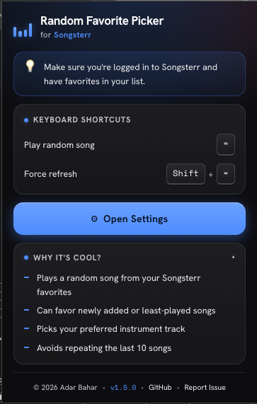

Play a random tab in one click. Jump straight to your instrument's track, and favor newly added or least-played songs.
Free & open source. Works on songsterr.com — just log in and add some favorites.

More than random — pick the right track and tune the shuffle to how you practice.
Open the Guitar, Bass, or Drums track when a song has one — otherwise the default track.
Favor newly added or least-played favorites with one-tap presets or custom sliders.
Automatically skips the last 10 songs you played, so practice stays varied.
Press = (or your own key) to shuffle without leaving the tab.
A roomy options tab for randomization, instrument, shortcut, and more — synced across devices.
Smart caching makes repeat picks instant. No tracking, minimal permissions.
Add the extension from the Chrome Web Store — free, no account needed.
Sign in to Songsterr and add the songs you love to your favorites.
Click the Random button or press =. A random favorite loads instantly.
The full code lives on GitHub. Found a bug, or have an idea to make it better? Open an issue — feature requests are welcome.